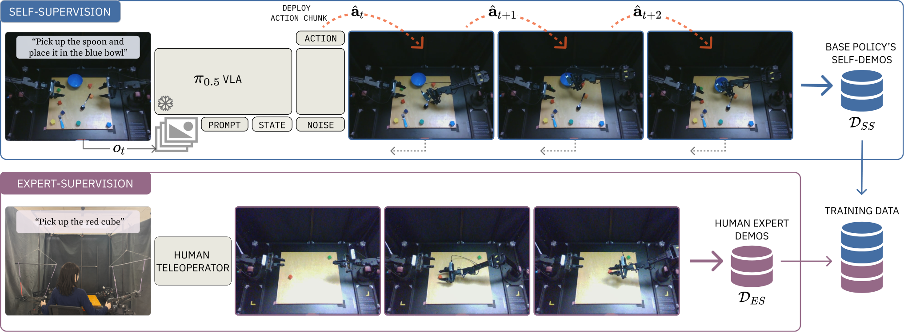
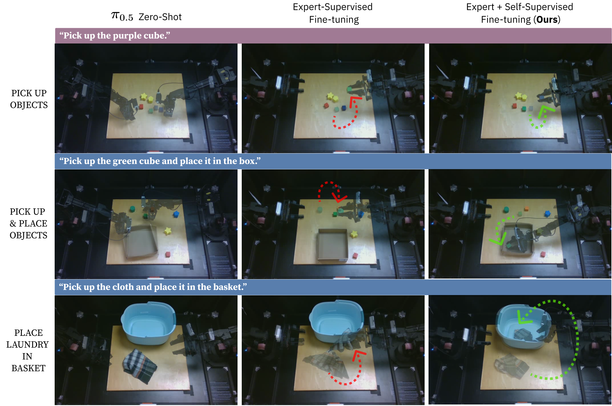

제출: 2026년 8월 19일 (v1) · 백본 π0.5 · 평가 ALOHA 실로봇 + RoboTwin 시뮬
한 줄 요약 (TL;DR)
사전학습된 VLA(Vision-Language-Action model, 시각·언어를 입력받아 로봇 행동을 출력하는 파운데이션 정책)를 새 로봇에 파인튜닝(fine-tuning, 소량의 데이터로 사전학습 모델 미세 조정)할 때 발생하는 파국적 망각(catastrophic forgetting, 새 태스크 학습 후 기존 능력 상실)과 다태스크 지시 추종 붕괴를 막기 위해, 얼린 원본 정책이 실제 대상 로봇 위에서 굴린 zero-shot 롤아웃을 자기 데모(self-demonstration)로 다시 사용해 전문가 데이터와 함께 학습한다. 하드웨어 도메인 갭이 없다는 점이 핵심. ALOHA pick-up 성공률 65→90%, pick-and-place 지시 추종 0→90%, RoboTwin에서 망각된 태스크 성능 16.6→70.6%(오라클 대비 −0.2%p).
1배경 · 문제의식
π0, π0.5, OpenVLA 같은 VLA(Vision-Language-Action model)는 대규모 로봇 데이터로 사전학습돼 강력한 다태스크 조작 능력을 지닌다. 그러나 사용자가 자기 실험실의 새 로봇에 배포하려 파인튜닝하면 (1) 아주 작은 하드웨어 불일치(카메라 위치, 그리퍼 종류, 관절 오프셋 등)만으로도 zero-shot 성공률이 급락하고, (2) 파인튜닝 후에는 사전학습에서 얻은 다른 태스크 능력과 지시 추종 능력이 사라진다.
기존 완화책은 대개 사전학습 데이터 재플레이(rehearsal, 옛 데이터를 새 학습에 섞기)인데, 상용 파운데이션 모델을 받은 다운스트림 사용자는 원본 데이터에 접근할 수 없다는 현실적 제약이 있다. 저자들은 "그렇다면 데이터 없이도 옛 능력을 부활시킬 방법은?"이라는 질문에서 출발한다.
2핵심 Contribution
Self-Demonstrated 생성 제어(self-demonstrated generative control) — 얼린 사전학습 정책이 실제 배포 대상 로봇 위에서 zero-shot으로 굴린 궤적(관찰·행동 쌍)을 그대로 자기지도 학습 타깃으로 재사용. 로봇/시점/조명이 배포와 완전히 동일하므로 임베디먼트 갭(embodiment gap, 학습·배포 로봇 차이) 0이라는 게 핵심 원리.
망각 없는 파인튜닝 손실 — 전문가 데모 손실 LES와 자기 데모 손실 LSS를 λ로 결합한 이중 목적(joint objective). 원본 pretraining 데이터가 없어도 사전학습 능력을 자체 리허설(self-rehearsal)로 보존.
다중 분포 벤치마크 프로토콜 — RoboTwin 시뮬과 실 ALOHA(양팔 로봇)에서 (a) 전문가 태스크 (b) 자기지도 태스크 (c) 신규 물체 (d) 신규 조합 4개 분포로 일반화·보존·습득을 함께 측정.
사전학습 정책은 π0.5: SigLIP(대비학습 기반 vision encoder) + PaliGemma(멀티모달 언어모델)로 관찰과 지시문을 인코딩한 뒤, action expert가 flow matching(FM, 노이즈에서 데이터 분포로 이어지는 벡터장을 회귀 학습해 연속 행동을 생성하는 방식)으로 행동 청크(action chunk, 여러 스텝의 연속 행동 묶음)를 출력한다. 학습 목표는 FAST 토큰(discrete action token) 크로스엔트로피와 조건부 flow matching 손실의 결합.
왜 이 백본인가 — π0.5는 이산 토큰(FAST) 헤드와 연속 flow-matching 헤드를 함께 갖는 이중 목적 정책이라, 언어 지시 추종과 연속 저수준 제어를 한 모델에서 학습·평가할 수 있다.
Self-Demo 수집 절차
배포 대상 로봇 위에서 얼린 정책 πbase를 zero-shot 실행해 (관찰 ot, 정책이 출력한 행동 ât) 튜플을 저장한다. 성공/실패 여부와 무관하게 수집하며, 논문은 벤치마크당 15–29개 롤아웃(rollout, 정책이 한 에피소드 동안 만들어낸 궤적)이면 충분함을 보인다. 태스크당 버퍼 크기 10 에피소드가 최소 필요치.
핵심 통찰 — 자기 데모의 관찰·행동은 "정책이 실제 그 로봇에서 만든 것"이라 관측 분포와 동역학이 배포 조건과 동일하다. 즉 도메인 갭 = 0. 심지어 롤아웃이 서브-옵티멀(sub-optimal, 최적이 아닌)이어도 오라클(전문가로 다시 수집)만큼 유용.
Joint 학습 목적 (Eq. 5)
전문가 데모 세트 DES에는 사람이 텔레옵으로 수집한 (o, a*), 자기 데모 세트 DSS에는 얼린 정책 롤아웃 (o, â)이 담긴다. 이중 손실은 다음과 같다:
L(θ) = LES(θ) + λ · LSS(θ)
여기서 LES는 전문가 라벨에 대한 FAST+FM 손실, LSS는 자기 라벨에 대한 동일 형태 손실, λ는 두 손실 균형을 맞추는 스칼라. 미니배치는 자기:전문가 = 1:1 비율로 샘플링(태스크는 균등 샘플링). 이는 self-distillation(자기 증류, 자신의 이전 예측을 스승으로 사용)과 rehearsal의 하이브리드로 해석 가능.
파인튜닝 전략
업데이트 범위
Full fine-tuning(모든 파라미터 학습) — LoRA(저랭크 어댑터), 부분 freeze보다 우수
목적 함수
FAST(이산 토큰) + FM(연속 flow) 이중 유지 — FM-only는 지시 추종 망각 심화
Knowledge insulation
다운스트림 파인튜닝에는 불리(사전학습에는 유효한 기법이 여기선 오히려 손해)
Self-demo 라벨
정책 예측 행동 â를 소프트 타깃으로 그대로 사용 (성공/실패 필터링 X)
데이터 규모
ALOHA pick-up
전문가 30 데모 (지시당 15) + 자기 데모 15–29 롤아웃
ALOHA pick-and-place
텔레옵 14분 + 자기 데모(place 지시는 전문가 없음)
ALOHA caterpillar
3색 기어 60 데모 + 자기 데모
RoboTwin Stage 1
10 태스크 × 500 계획 에피소드 (약 130,815 프레임)
RoboTwin Stage 2
2 stacking(전문가) + 10 자기지도 태스크(각 ~10 롤아웃)
4실험 결과
ALOHA 실로봇 (양팔 인형 로봇)
설정
Zero-shot π0.5
Expert-only
ES + SS (제안)
Pick-up 성공률
0%
65%
90%
Pick-and-place (post-grasp 지시 추종)
0%
0%
90%
Novel objects (신규 물체 일반화)
0%
50%
55%
Caterpillar (접촉-집약 양팔)
—
30%
90%
Caterpillar (novel 기어 색)
—
0%
30%
Held-out push skill
—
5% (oracle)
60%
Pick-and-place에서 place 지시에 대한 전문가 데모가 전혀 없어도, 자기 데모만으로 사전학습된 place 능력이 되살아난 것이 핵심. Held-out push는 전문가 데이터를 준 오라클보다도 자기 데모가 더 잘 됨(60 vs 5%).
RoboTwin 시뮬레이션
메트릭
Expert-only
ES + SS
Oracle (원본 데이터 접근)
자기지도 태스크 보존 (망각 회복)
16.6%
70.6%
70.8%
전문가 태스크 습득
93%
98%
—
신규 물체 일반화
—
44.5%
—
자기지도만으로 오라클 대비 단 0.2%p 차이로 망각을 복원. 오라클은 원본 pretraining 데이터로 다시 학습하는 이상적 상한.
5Ablation (주요 발견)
혼합 비율 (Table 9): 미니배치에서 자기:전문가 = 1:1이 최적. 태스크별 균등 샘플링이 태스크 크기 비례 샘플링보다 우수.
서브-옵티멀 데이터도 충분: "sub-optimal self-demos perform as well as an oracle that re-collects expert demos for those same tasks" — 자기 데모가 실패 궤적을 포함해도 오라클 전문가 재수집과 동등한 성능. 정책 자신의 롤아웃 분포에 노출되는 것이 핵심.
Fine-tuning 방식: Full FT > LoRA(저랭크 어댑터) > 부분 freeze. 파라미터 효율 방식은 다태스크 파인튜닝에 불리.
목적 함수 조합: FAST(이산) + FM(연속) 병용이 FM-only보다 망각 감소. 언어 지시 헤드를 함께 학습해야 지시 추종이 유지됨.
Knowledge insulation(사전학습 파라미터 일부를 고정해 보호): 사전학습에서는 유효하지만 이 논문의 다운스트림 파인튜닝에는 오히려 해로움.
버퍼 크기: 태스크당 10 에피소드가 최소치. 그 미만은 커버리지 부족.
6핵심 Figure / Table

Method Diagram — Self-Demo + Expert 이중 데이터 파이프라인. 위쪽 경로는 사람이 텔레옵으로 수집한 expert demos(LES), 아래쪽 경로는 얼린 사전학습 정책 πbase가 실제 배포 로봇에서 굴린 zero-shot 롤아웃을 그대로 라벨로 사용한 self-demos(LSS). 두 손실을 L = LES+λLSS로 합쳐 학습해 도메인 갭 없이 사전학습 능력을 유지하며 신규 스킬을 습득. (출처: arXiv:2608.19490)

Figure 1 — ALOHA 실로봇 대표 결과. Zero-shot π0.5(0%)와 expert-only 파인튜닝(pick-up 65%, pick-and-place 0%) 대비, 제안 ES+SS는 pick-up 90%, pick-and-place 지시 추종 90%를 달성. 특히 place 지시에는 전문가 데모가 하나도 없었음에도 자기 데모만으로 사전학습된 능력이 되살아남. (출처: arXiv:2608.19490)
왜 이 두 그림인가 — Method Diagram은 논문 전체 아이디어(자기 롤아웃을 리허설 데이터로 재사용)를 한눈에 보여주고, Figure 1은 "전문가 데모 없이도 사전학습된 스킬이 살아난다"는 가장 강한 정량적 주장의 근거이자 다태스크 지시 추종 회복을 시각화한다.